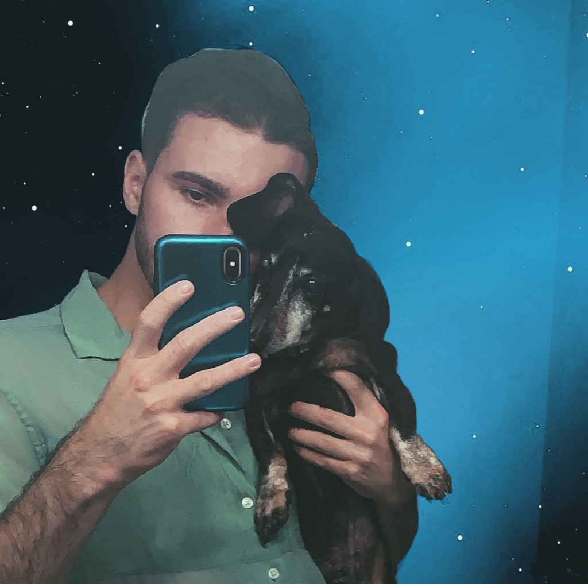
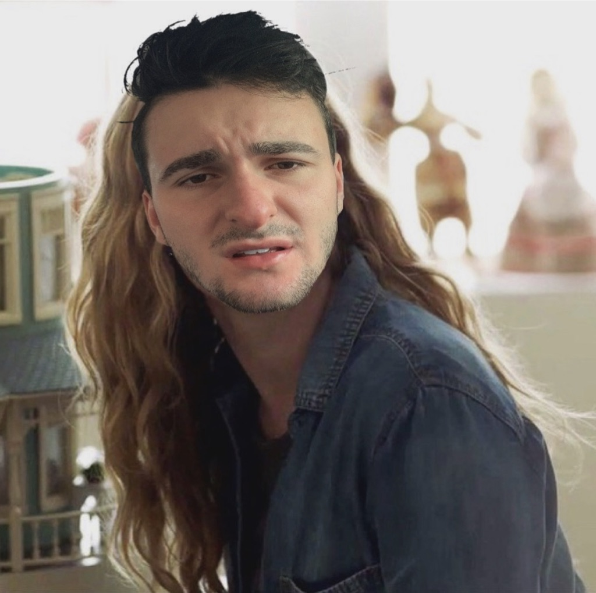

This is me sitting on the Iron Throne. I simply cut myself out on a layer on photoshop and paster myself on the throne. I added a filter to make the tranistion and colors more seamless.
This is a mirror selfie I took with my dog the last time I was home. I made a somewhat translucent space layer and but us behind it in this photo, and put on a filter.
This is my face on top of Amy Adam's character in my favorite show, Sharp Objects. This one I just cut out my face, put it on top of her's and resized it to make it fit as well as possible. I also changed the lighting of my face to match the scene better.